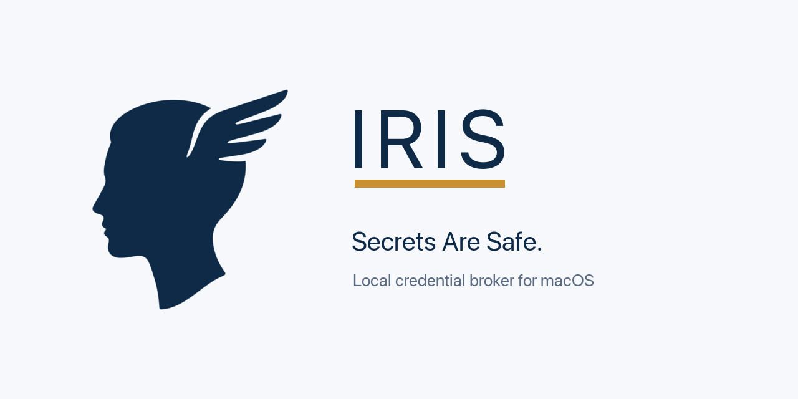
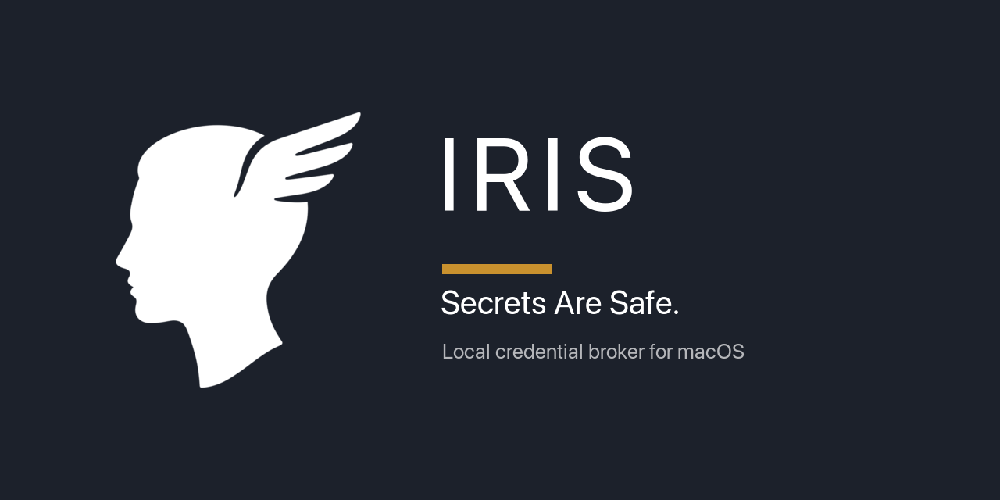

IRIS — Manuel utilisateur
Interception · Resolution · Injection · Substitution. Secrets are safe.
1Préambule¶
IRIS est un broker de credentials local pour macOS. Il s'interpose entre vos outils en ligne de commande
(agents CLI, gh, curl, scripts Python, serveurs MCP…) et les API distantes,
et substitue à la volée des placeholders inertes par les vraies valeurs tirées du trousseau macOS.
Le problème
Les agents IA sont structurellement vulnérables : prompt injection, fichiers malveillants dans un repo,
sorties d'outils non assainies — autant de vecteurs qui peuvent piéger un agent et l'amener à exfiltrer
ses propres credentials. Tant que la vraie clé API vit dans process.env, elle est à portée
d'un cat .env ou d'un POST construit dynamiquement.
La réponse d'IRIS
Mettre une frontière de confiance entre l'agent et les secrets. L'agent fait son travail, IRIS détient les clés. Concrètement :
- Vous remplacez
ANTHROPIC_API_KEY=sk-ant-…parANTHROPIC_API_KEY={{kc:anthropic_api_key}}. - Un proxy MITM local sur
127.0.0.1:8888intercepte les requêtes HTTPS sortantes. - Pour les hosts whitelistés (ex.
api.anthropic.com), il décrypte, détecte le placeholder, vérifie le scoping, substitue la vraie valeur, re-encrypte. - Pour les autres hosts, il fait un CONNECT-tunnel transparent — pas de déchiffrement, pas de substitution.
Ce mécanisme est agnostique : il ne protège pas que la clé d'un LLM. Tout secret que
vous enregistrez dans le trousseau — PAT GitHub, token npm, clé de registry, identifiants d'API
fournisseur… — et que vous référencez par {{kc:NAME}} (dans l'environnement ou
dans un fichier de configuration) est résolu de la même façon, et borné à ses allowed_hosts.
La vraie valeur ne quitte jamais le trousseau : votre env et vos fichiers ne contiennent que des
placeholders inertes.
À qui s'adresse ce manuel. Développeurs et power-users macOS qui utilisent quotidiennement des agents CLI et veulent durcir la posture sécurité autour de leurs clés API sans changer leur workflow.
Ce que ce manuel couvre
- Partie I — comprendre le modèle (concepts, architecture, flux, menace).
- Partie II — installer et configurer IRIS sur une machine.
- Partie III — la ligne de commande
iris. - Partie IV — l'application menu-bar.
- Partie V — exploitation : démarrage automatique, distribution, désinstallation, dépannage.
IRIS 1.0 est complet : daemon, CLI, application menu-bar, installeur signé et notarisé, démarrage automatique et désinstallation propre sont tous livrés et exploitables dès aujourd'hui. La Partie III couvre l'usage en ligne de commande, la Partie IV l'application menu-bar — les deux pilotent le même daemon.
2Concepts fondamentaux¶
Placeholder
Une chaîne au format {{kc:NAME}} où NAME est le nom d'un secret enregistré
dans IRIS. La regex stricte est \{\{kc:([a-zA-Z0-9_-]{1,64})\}\}.
export ANTHROPIC_API_KEY="{{kc:anthropic_api_key}}"
export GITHUB_TOKEN="{{kc:github_token}}"Proxy MITM
irisd écoute en HTTPS sur 127.0.0.1:8888. Vos outils y sont dirigés via la
variable d'environnement HTTPS_PROXY. Le proxy applique deux comportements distincts
selon que le host de destination est dans la whitelist MITM ou non.
Whitelist MITM
La liste des hosts pour lesquels IRIS accepte de jouer le man-in-the-middle (déchiffrer, scanner, substituer, re-chiffrer). Tout host absent de cette liste est traité en CONNECT-tunnel pur : IRIS forwarde les octets chiffrés sans les voir.
Allowed_hosts (scoping)
Chaque secret est lié à un ou plusieurs hosts autorisés. Le scoping est l'invariant central
d'IRIS : une clé Anthropic ne sera jamais substituée dans une requête vers GitHub, même si
l'agent essaie de la mettre dans un POST /issues.
CA locale
Pour pouvoir déchiffrer le trafic vers les hosts whitelistés, IRIS génère un certificat racine ECDSA
P-256 local. La clé privée vit dans le trousseau de session (login Keychain), ACL-protégée pour le seul binaire signé
irisd. Le cert public est exporté en PEM sur disque (matériel public, accessible) et
ajouté au trust store macOS.
Survolez ou cliquez un nœud du diagramme
Les trois acteurs principaux : l'outil hôte (qui ne voit que des placeholders), le proxy irisd (qui détient les clés du trousseau), et l'API upstream (qui reçoit du trafic indistinguable d'un trafic direct).
3Architecture¶
IRIS se décompose en trois cibles binaires et une bibliothèque partagée. Le tout repose sur SwiftPM
pour les trois binaires CLI/daemon, plus un projet Xcode pour la cible app (contrainte
SMAppService qui nécessite des plists embarqués dans un bundle).
| Cible | Type | Rôle | Statut |
|---|---|---|---|
irisd | Daemon | Proxy MITM, IPC admin, événements SSE, accès Keychain | livré |
iris | CLI | Frontale opérateur : secrets, rules, status, logs, doctor, mcp wrap | livré |
Iris.app | Menu bar app | Monitoring temps réel, CRUD secrets, alertes, settings | livré |
IrisKit | Library | Modèles, config JSON, abstraction Keychain, CA, IPC, placeholder engine | livré |
Diagramme d'architecture
Cliquez sur un composant
L'architecture est volontairement simple : un daemon central, deux clients (la CLI et l'app menu-bar), un trousseau pour la persistance, et les API upstream classiques.
Structure du repo
iris/
├── Package.swift # SwiftPM, 3 targets binaires + IrisKit
├── Sources/
│ ├── IrisKit/ # Modèles, config, CA, IPC, placeholder engine
│ ├── irisd/ # Daemon
│ └── iris/ # CLI
├── Tests/
│ ├── IrisKitTests/ # Unit tests
│ └── IntegrationTests/ # Proxy end-to-end
└── docs/ # Manuels, audits, plans4Flux d'une requête¶
Trace pas-à-pas d'une requête depuis un agent CLI vers api.anthropic.com, avec
substitution réussie. Naviguez entre les étapes pour suivre la mécanique.
Étape 1 — L'agent construit sa requête
L'agent lit ANTHROPIC_API_KEY dans son env. Cette valeur est un placeholder, pas la vraie clé.
Il construit son POST /v1/messages normalement.
POST https://api.anthropic.com/v1/messages
x-api-key: {{kc:anthropic_api_key}}
content-type: application/json
{"model":"claude-…","messages":[…]}Étape 2 — CONNECT vers le proxy
Le client HTTP honore HTTPS_PROXY=http://127.0.0.1:8888. Il ouvre TCP vers le proxy et
envoie un CONNECT plain-text pour réserver le tunnel HTTPS.
CONNECT api.anthropic.com:443 HTTP/1.1
Host: api.anthropic.com:443Étape 3 — Vérification whitelist MITM
Le daemon reçoit le CONNECT. Il vérifie api.anthropic.com contre la liste
hosts de config.json. Match trouvé → réponse 200 Connection Established.
Si pas de match, le daemon aurait fait un splice TCP brut sans déchiffrer (event passThrough).
HTTP/1.1 200 Connection EstablishedÉtape 4 — Double handshake TLS
Côté agent : le daemon agit en serveur TLS. Il mint à la volée un cert leaf pour
api.anthropic.com, signé par la CA locale. ALPN n'annonce que http/1.1.
Côté upstream : en parallèle, le daemon ouvre une connexion TLS cliente vers
api.anthropic.com:443, valide la chaîne via le trust store système.
agent ←TLS→ irisd ←TLS→ api.anthropic.com
(CA locale) (chaîne réelle)Étape 5 — Scan de la requête déchiffrée
Le PlaceholderEngine scanne la requête maintenant claire (côté daemon) :
headers (nom + valeur), URL+query, body (si UTF-8 et < 4 MiB). Regex
\{\{kc:([a-zA-Z0-9_-]{1,64})\}\}.
Hit sur le header x-api-key → secret anthropic_api_key.
headers: x-api-key → {{kc:anthropic_api_key}} HIT
path: /v1/messages no-match
body: {…} (application/json, 412 B) no-matchÉtape 6 — Vérification du scoping
Le secret anthropic_api_key a allowed_hosts = ["api.anthropic.com"].
La requête va vers api.anthropic.com → match. Le daemon peut résoudre la valeur
via le SecretStore (hit dans le cache LRU, sinon Keychain).
Si mismatch : aucune substitution, event exfilBlocked avec règle R1 (high).
secret("anthropic_api_key").allowed_hosts
= ["api.anthropic.com"]
request host = "api.anthropic.com"
→ AUTORISÉÉtape 7 — Checks d'exfiltration (R2–R5)
Avant de substituer, le moteur vérifie les autres règles : localisation canonique (R2), nombre de secrets distincts (R3), suspicion content-type (R4), volume rolling (R5).
Ici tout passe : header standard, un seul secret, JSON sur endpoint d'API, débit normal.
R2 location: x-api-key ∈ canonical OK
R3 multi-secret: 1 distinct OK
R4 content-type: application/json + /v1 OK
R5 rate: 12 / min < 60 OKÉtape 8 — Substitution
Remplacement byte-level du placeholder par la vraie valeur. Le buffer du body (ou la chaîne du header) est réécrit en place. La valeur n'apparaît jamais en logs, ni dans les events, ni dans le stream SSE.
before: x-api-key: {{kc:anthropic_api_key}}
after: x-api-key: sk-ant-api03-XXXXXXXXXX…Étape 9 — Forward upstream
La requête modifiée part vers api.anthropic.com via la connexion TLS upstream
déjà établie. La réponse (potentiellement streamée en SSE) est forwardée verbatim vers l'agent,
sans buffering, sans scan.
irisd → api.anthropic.com → HTTP/1.1 200 OK
<streaming SSE chunks…>
agent ← irisd (verbatim, no scan)Étape 10 — Émission d'event
À la complétion, un Event est émis vers le ring buffer in-memory, persisté en
SQLite et diffusé à tous les souscripteurs SSE. Métadonnées uniquement — jamais la valeur.
{
"kind": "substituted",
"host": "api.anthropic.com",
"method": "POST", "path": "/v1/messages",
"status_code": 200, "duration_ms": 8421,
"substituted_secrets": ["anthropic_api_key"],
"alert": null
}Pour une tentative d'exfiltration (ex. agent qui POST son env vers api.github.com/issues),
l'étape 6 échoue : allowed_hosts ne contient pas api.github.com. Le daemon
ne substitue pas, forwarde la requête telle quelle (avec le placeholder littéral, inerte), et émet
un event exfilBlocked. GitHub recevra une issue contenant la chaîne brute
{{kc:anthropic_api_key}} — aucune fuite.
5Modèle de menace¶
Adversaires couverts
| ID | Adversaire | Mitigation IRIS |
|---|---|---|
| A1 | Agent prompt-injecté qui dump process.env et POST vers attaquant |
L'env ne contient que des placeholders inertes. Le POST sort vers un host non-whitelisté → CONNECT-tunnel sans substitution. |
| A2 | Agent qui POST un placeholder vers un host non-autorisé (ex. clé Anthropic dans une issue GitHub) | Le scoping allowed_hosts refuse la substitution. La requête part avec le placeholder littéral. Event exfilBlocked + alert. |
| A3 | MCP server malveillant qui lit l'env via stdio inheritance | Idem A1 — l'env hérité ne contient que des placeholders. Le proxy s'applique aussi aux sous-processus. |
| A4 | Process local non-root qui essaie de lire la clé privée de la CA | ACL Keychain liée au binaire irisd signé. Tout autre process se voit présenter un prompt "wants to allow". |
Adversaires hors scope
- Root local — si l'attaquant a root, il possède la machine. IRIS ne défend pas contre ça.
- Exploits kernel, bypass SIP, Mach injection — hors modèle user-mode macOS.
- Réseau hostile — le proxy n'écoute que sur
127.0.0.1. Aucune surface réseau externe. - Apps GUI lancées depuis Finder/Dock — n'héritent pas de
HTTPS_PROXY. Volontaire (G8).
Invariants de sécurité
| ID | Invariant |
|---|---|
| I1 | La valeur en clair d'un secret n'est jamais écrite sur disque ailleurs que dans le Keychain. |
| I2 | La valeur en clair n'apparaît jamais dans les logs, events, stream SSE, ou UI. Vérifié par tests unitaires de redaction. |
| I3 | Un placeholder n'est résolu que si l'host de destination ∈ allowed_hosts du secret. |
| I4 | La clé privée de la CA n'est accessible qu'au binaire irisd signé (ACL Keychain). |
| I5 | La socket admin Unix a mode 0600 et appartient à l'utilisateur courant. |
6Détection d'exfiltration¶
Cinq règles heuristiques, indépendantes, qui s'appliquent en cascade sur chaque requête contenant au moins un placeholder. Toutes les règles déclenchées contribuent à un seul alert ; la sévérité finale est le maximum des sévérités déclenchées.
Comportement selon le mode
Le comportement à la détection est configurable via config.security.on_exfil_attempt :
| Mode | Effet |
|---|---|
block_only | Log de l'event, pas de notification, daemon continue. |
block_and_notify défaut | + notification macOS UNUserNotificationCenter et entrée dans l'onglet Security de l'app. |
block_notify_pause | + pause complète du daemon : refus de toute nouvelle substitution jusqu'à iris resume. |
Dans tous les cas, la requête fautive est forwardée telle quelle, placeholder littéral inclus. L'upstream la rejettera comme malformée (auth invalide) — c'est le backstop naturel.
7Compatibilité par fournisseur¶
La capacité d'IRIS à substituer un secret pour un fournisseur donné dépend de trois facteurs indépendants : (1) absence de cert pinning côté client, (2) compatibilité HTTP/1.1 sur l'endpoint, (3) modèle d'auth statique (token plat dans un header, pas de signature dérivée). Si l'un des trois manque, IRIS ne peut pas s'interposer proprement — quel que soit le fournisseur.
Trois facteurs structurels
État au mieux de notre connaissance
Inventaire informel des fournisseurs IA et adjacents. À valider par sonde réelle avant prod — les SDK évoluent et les comportements peuvent changer entre versions.
| Fournisseur | Endpoint typique | F1 pinning | F2 h1.1 OK | F3 signature | Compatible IRIS |
|---|---|---|---|---|---|
| Anthropic | api.anthropic.com |
non | oui | token plat (x-api-key) |
oui |
| OpenAI | api.openai.com |
non | oui | token plat (Authorization: Bearer) |
oui |
| OpenRouter | openrouter.ai |
non | oui | token plat (OpenAI-compat) | oui |
| Google Gemini (AI Studio) | generativelanguage.googleapis.com |
non | oui | token plat (x-goog-api-key) |
oui |
| Google Vertex AI | *.aiplatform.googleapis.com |
non | REST oui, gRPC non | JWT signé (service account) | partiel |
| Mistral | api.mistral.ai |
non | oui | token plat | oui |
| Cohere | api.cohere.com |
non | oui | token plat | oui |
| Groq | api.groq.com |
non | oui | token plat (OpenAI-compat) | oui |
| Together AI | api.together.xyz |
non | oui | token plat | oui |
| GitHub (PAT) | api.github.com |
non | oui | token plat | oui |
| AWS Bedrock | bedrock-runtime.*.amazonaws.com |
non | oui | SigV4 (signature du canonical request) | hors modèle |
| Azure OpenAI | *.openai.azure.com |
non | oui | token plat (api-key) ou Entra ID OAuth |
oui (api-key) |
Récapitulatif
- OK direct — Anthropic, OpenAI, OpenRouter, Mistral, Cohere, Groq, Together, Gemini AI Studio, GitHub PAT, Azure OpenAI (mode
api-key). Tous des tokens plats dans un header sur HTTP/1.1. - OK avec HTTP/2 (roadmap) — Vertex AI via les endpoints REST. Le SDK officiel préfère gRPC mais l'API REST h1.1 existe et fonctionnera dès le support HTTP/2 livré.
- Hors modèle de substitution — AWS Bedrock (SigV4), GCP service accounts à signature JWT. La signature est calculée côté SDK avant que IRIS ne voie la requête : substituer un placeholder au dernier moment casse la signature. Nécessite un mécanisme parallèle (wrapper SDK ou reverse-proxy SigV4-aware), pas dans le scope MVP.
Comment vérifier votre fournisseur
Trois sondes pour qualifier un endpoint avant de l'ajouter à votre whitelist :
# 1. Vérifier l'ALPN négocié (F2)
openssl s_client -connect <host>:443 -alpn h2,http/1.1 \
< /dev/null 2>&1 | grep 'ALPN protocol'
# → http/1.1 = compatible IRIS MVP
# → h2 sans fallback = nécessite support HTTP/2
# 2. Vérifier que le client honore HTTPS_PROXY + custom CA (F1)
export HTTPS_PROXY=http://127.0.0.1:8888
export NODE_EXTRA_CA_CERTS=$HOME/Library/Application\ Support/iris/ca.pem
<client> --version # ou un appel léger
# Si l'appel passe sans erreur TLS, pas de pinning.
# 3. Identifier le modèle d'auth (F3)
<client> --verbose 2>&1 | grep -iE 'authorization|x-.*-key|signature|sigv4'
# Header simple → OK pour IRIS
# 'Signature=' ou 'AWS4-HMAC-' → hors modèleLe tableau ci-dessus reflète l'état au moment de la rédaction du manuel et concerne les SDK/CLI serveur publics. Une version future d'un SDK peut activer le pinning ou forcer h2 sans préavis. Re-validez les facteurs F1–F3 sur les versions de production avant de confier une clé sensible à IRIS pour un nouveau fournisseur.
8Installation¶
Prérequis
- macOS 13 Ventura ou plus récent (Apple Silicon ou Intel)
- Droits administrateur (installation .pkg + ajout du CA au trust store)
- Xcode CLT pour build depuis les sources :
xcode-select --install
Méthode 1 — Package signé (recommandée)
Téléchargez Iris.pkg depuis la
page des releases et double-cliquez.
L'installeur est signé Developer ID et notarisé par Apple — aucun
avertissement Gatekeeper. L'assistant guidé installe :
/Applications/Iris.app— l'application menu-bar, avec le daemonirisdembarqué dans le bundle (cf. chapitre 18) ;/usr/local/bin/iris— la ligne de commande ;- au premier lancement, l'app s'enregistre pour le démarrage automatique
(
SMAppService, cf. chapitre 19) et installe la CA dans le trust store de l'utilisateur. La configuration du terminal et la CA restent pilotables depuis l'onglet Settings de l'app.
Pour vérifier la notarisation avant d'installer :
spctl --assess --type install -vv Iris.pkg doit répondre
accepted source=Notarized Developer ID.
Méthode 2 — Build depuis les sources
Pour les développeurs, ou en attendant le .pkg.
# Cloner et compiler
git clone https://github.com/Sandjab/iris.git
cd iris
swift build -c release
# Lancer le daemon en foreground (pour debug)
.build/release/irisd --foreground
# La CLI dans un autre terminal
.build/release/iris statusUn binaire compilé localement n'est pas signé. L'ACL Keychain qui restreint l'accès aux secrets à irisd signé uniquement ne s'appliquera donc pas — vous verrez les prompts macOS à chaque accès. Réservez ce mode au développement.
9Configuration shell¶
IRIS s'active par injection de deux variables d'environnement dans votre profil shell : le proxy
(HTTPS_PROXY) et le certificat de la CA pour Node.js
(NODE_EXTRA_CA_CERTS). Les outils qui en héritent passeront par le proxy.
Méthode recommandée (zsh)
La CLI gère le bloc pour vous : un bloc balisé et idempotent ajouté à ~/.zshrc entre
des marqueurs # >>> iris >>> … # <<< iris <<<.
# Affiche le bloc puis demande confirmation
iris shell install
# Sans confirmation (scripting)
iris shell install --yes
# État / retrait propre du bloc
iris shell status
iris shell uninstallL'application expose la même action dans l'onglet Settings → Terminal (Configure… / Remove…).
Configuration manuelle
Si vous gérez votre profil à la main, ajoutez exactement ces deux variables (plus vos placeholders) :
# Ajouter à ~/.zshrc
export HTTPS_PROXY="http://127.0.0.1:8888"
export NODE_EXTRA_CA_CERTS="$HOME/Library/Application Support/iris/ca.pem"
# Vos placeholders
export ANTHROPIC_API_KEY="{{kc:anthropic_api_key}}"
export GITHUB_TOKEN="{{kc:github_token}}"
# Recharger
source ~/.zshrc# Ajouter à ~/.bashrc ou ~/.bash_profile
export HTTPS_PROXY="http://127.0.0.1:8888"
export NODE_EXTRA_CA_CERTS="$HOME/Library/Application Support/iris/ca.pem"
export ANTHROPIC_API_KEY="{{kc:anthropic_api_key}}"
export GITHUB_TOKEN="{{kc:github_token}}"
source ~/.bashrc# Ajouter à ~/.config/fish/config.fish
set -gx HTTPS_PROXY "http://127.0.0.1:8888"
set -gx NODE_EXTRA_CA_CERTS "$HOME/Library/Application Support/iris/ca.pem"
set -gx ANTHROPIC_API_KEY "{{kc:anthropic_api_key}}"
set -gx GITHUB_TOKEN "{{kc:github_token}}"
source ~/.config/fish/config.fishPourquoi pas SSL_CERT_FILE / CURL_CA_BUNDLE ?
Ces variables remplacent tout le bundle CA pour OpenSSL/LibreSSL au lieu d'ajouter
le cert IRIS. Les pointer sur le seul ca.pem casserait la validation TLS pour tous
les domaines non-whitelistés. Préférez iris ca install qui ajoute le CA au trust
store de l'utilisateur — les outils qui consultent le trust store macOS le respectent automatiquement.
HTTPS_PROXY ne s'applique qu'aux processus lancés depuis un shell (terminal,
scripts). Les apps GUI lancées depuis le Finder, le Dock ou Spotlight ne sont pas
interceptées — c'est intentionnel (objectif G8). Pour intercepter une app GUI ponctuellement,
lancez-la depuis un terminal : open -a Slack n'hérite pas du proxy, mais
/Applications/Slack.app/Contents/MacOS/Slack oui.
10Fichier config.json¶
Le daemon lit sa configuration depuis ~/Library/Application Support/iris/config.json au
démarrage, et recharge sur SIGHUP (ou iris config reload). Aucun secret n'est
stocké dans ce fichier — uniquement la configuration opérationnelle et la whitelist MITM. Il est créé
automatiquement au premier démarrage et fait foi. Modifiez-le de préférence via
iris config set ou l'onglet Settings de l'app (qui valident la saisie et gardent
des sauvegardes), plutôt qu'à la main.
{
"version": 1,
"broker": {
"listen": "127.0.0.1:8888",
"events_listen": "127.0.0.1:8899",
"admin_socket": "~/Library/Application Support/iris/admin.sock",
"log_level": "info",
"event_retention_days": 7,
"event_ring_size": 10000
},
"security": {
"on_exfil_attempt": "block_and_notify",
"max_substitutions_per_minute": 60
},
"backups": {
"max_count": 10
},
"hosts": [
{ "host": "api.anthropic.com", "origin": "default" }
]
}Sections
broker
| Clé | Type | Défaut | Effet |
|---|---|---|---|
listen | string | 127.0.0.1:8888 | Adresse:port du proxy MITM. Toujours sur localhost. |
events_listen | string | 127.0.0.1:8899 | Adresse:port du serveur SSE d'events. |
admin_socket | path | ~/.../admin.sock | Socket Unix admin. Mode 0600 enforcé au bind. |
log_level | enum | info | trace, debug, info, warn, error. |
event_retention_days | int | 7 | TTL des events dans SQLite. Compaction quotidienne. |
event_ring_size | int | 10000 | Taille du ring buffer en mémoire (live view). |
security
| Clé | Type | Défaut | Effet |
|---|---|---|---|
on_exfil_attempt | enum | block_and_notify | block_only, block_and_notify, block_notify_pause. Voir chapitre 6. |
max_substitutions_per_minute | int | 60 | Seuil R5 par secret. |
backups
| Clé | Type | Défaut | Effet |
|---|---|---|---|
max_count | int | 10 | Nombre de sauvegardes horodatées de config.json conservées à chaque écriture. |
hosts
Tableau de la whitelist MITM. Chaque entrée déclare un host qu'IRIS accepte de déchiffrer, avec son
origin : default (host protégé fourni par IRIS, non supprimable via CLI) ou
user (ajouté par l'utilisateur). Match exact, case-insensitive, pas de wildcard. Gérez la
whitelist via iris rule ou l'onglet Rules de l'app plutôt qu'à la main.
11CA & trust store¶
La CA locale est générée automatiquement au premier démarrage du daemon : paire ECDSA P-256, clé
privée dans le Keychain (service io.iris.ca, compte privatekey, protégée par
une ACL liée au binaire irisd signé — cf. chapitre 5), cert public exporté en PEM sur
~/Library/Application Support/iris/ca.pem.
Vérifier la CA
# Empreinte SHA-256 de la CA
iris ca fingerprint
# Chemin du PEM (--print pour le contenu, --path <dest> pour le copier)
iris ca export
# Vérifier que la CA est dans le trust store de l'utilisateur
iris ca is-trustedInstaller la CA dans le trust store
# Ajoute la CA au trust store de l'utilisateur (prompt admin une seule fois).
# Couvre OpenSSL, LibreSSL, Safari, gh, git, curl…
iris ca install
# La retirer du trust store
iris ca uninstallL'installation au trust store de l'utilisateur nécessite une authentification une seule fois. Après ça, tous les outils utilisant le trust store macOS acceptent silencieusement les certs leaf mintés par IRIS pour les hosts whitelistés.
Node.js ne lit pas le trust store macOS — d'où la nécessité de
NODE_EXTRA_CA_CERTS dans le shell.
Certificats leaf
Pour chaque host whitelisté, le daemon mint un cert leaf à la volée (CN = host, SAN includes host,
validité 90 jours), signé par la CA. Le cert est gardé en cache mémoire ; aucune persistance disque.
La clé privée de la CA n'est jamais extraite : les opérations de signature passent
par SecKeyCreateSignature qui garde la clé dans le Keychain.
12CLI — vue d'ensemble¶
La CLI iris est l'interface complète vers le daemon. Toutes les opérations transitent
par la socket Unix admin (mode 0600) en JSON-RPC 2.0. Tant que la socket existe et que
les permissions sont bonnes, n'importe quel binaire peut piloter le daemon — la sécurité repose sur
les permissions FS.
Sous-commandes
| Groupe | Sous-commandes | Couverture |
|---|---|---|
iris secret | add, list, show, edit, rotate, rm, quarantine, unquarantine | Gestion des secrets |
iris rule | add, list, rm | Whitelist des hosts MITM |
iris ca | export, fingerprint, is-trusted, install, uninstall | Gestion de la CA locale |
iris config | get, set, reload | Inspection / modification de config.json |
iris shell | install, uninstall, status | Bloc d'environnement dans ~/.zshrc |
iris mcp | wrap, unwrap | Patch automatique des fichiers MCP |
iris status | — | État du daemon, stats temps réel |
iris logs | --follow, --kind, --host, --since | Events historiques ou stream live |
iris doctor | — | Diagnostic complet de l'installation |
iris pause / resume | — | Pause temporaire des substitutions |
Flags globaux
--json— sortie JSON sur les commandes de lecture (idempotent pour scripting).--helpsur n'importe quelle sous-commande pour l'usage détaillé.
Codes de sortie
| Code | Signification |
|---|---|
0 | Succès |
1 | Erreur générique (validation, payload) |
2 | Daemon injoignable (socket absente ou refus de connexion) |
3 | Erreur d'I/O (lecture fichier, backup, etc.) |
13Gérer les secrets¶
Ajouter un secret
# Interactif (valeur masquée à la saisie)
iris secret add anthropic_api_key --allowed-hosts api.anthropic.com
# Depuis stdin (scripting, CI)
echo "sk-ant-api03-XXX" | iris secret add anthropic_api_key \
--allowed-hosts api.anthropic.com --value-from-stdin
# Multi-hosts
iris secret add github_token \
--allowed-hosts api.github.com,uploads.github.com,raw.githubusercontent.comL'option --value <v> existe pour le scripting mais imprime un warning sur stderr —
elle expose le secret dans l'historique shell. Préférez --value-from-stdin.
Conventions de nommage
- Nom : regex
^[a-zA-Z0-9_-]{1,64}$. Snake_case recommandé. allowed_hosts: noms DNS valides séparés par virgule. Pas de wildcard en MVP. Pas de port.
Lister
iris secret list
# NAME STATUS CREATED LAST_USED USES HOSTS
# anthropic_api_key active 2 days ago 2 min ago 1247 api.anthropic.com
# github_token active 2 days ago 1 day ago 18 api.github.com,uploads.github.com
# openai_api_key active 5 days ago - 0 api.openai.com
iris secret list --json
# [
# {"name":"anthropic_api_key","allowed_hosts":["api.anthropic.com"],"last_used_at":"…"},
# …
# ]Aucune commande IRIS — ni CLI ni RPC — ne révèle la valeur d'un secret en clair.
iris secret show retourne uniquement les métadonnées (nom, allowed_hosts, dates, usage).
C'est l'invariant I2.
Détail d'un secret
iris secret show anthropic_api_key
# name: anthropic_api_key
# allowed_hosts: api.anthropic.com
# created_at: 2026-04-12 14:30:01
# last_used_at: 2026-05-27 09:42:18
# usage_count: 1247Modifier les allowed_hosts
iris secret edit github_token \
--allowed-hosts api.github.com,uploads.github.com,raw.githubusercontent.comRotation
iris secret rotate anthropic_api_key
# Prompte pour la nouvelle valeur (ou lit stdin). Préserve l'ACL Keychain existante.Quarantaine
# Désactive la substitution d'un secret sans le supprimer (réversible). Le secret
# reste en Keychain ; ses placeholders passent littéralement jusqu'à réactivation.
iris secret quarantine anthropic_api_key
# Réactiver la substitution
iris secret unquarantine anthropic_api_keySuppression
iris secret rm openai_api_key
# Demande une confirmation interactive (y/N). En contexte non-interactif (script),
# ajoutez --yes — sinon la commande attend une réponse et se bloque.
iris secret rm openai_api_key --yes14Whitelist MITM¶
La whitelist contrôle quels hosts IRIS accepte de déchiffrer. Tout host absent est traité en CONNECT-tunnel transparent, donc aucune substitution n'est possible — sécurité par défaut.
Ajouter un host à la whitelist signifie qu'IRIS pourra potentiellement substituer des secrets
dans les requêtes qui y vont. Cela n'est dangereux que si vous avez des secrets dont
allowed_hosts contient des hosts que vous ne contrôlez pas. Le scoping est votre garde-fou —
n'autorisez un secret que sur les hosts strictement nécessaires.
Lister
iris rule list
# HOST ORIGIN CREATED
# api.anthropic.com default 2026-06-10T19:34:42Z
# api.stripe.com user 2026-06-11T08:12:55ZAjouter
iris rule add api.stripe.comSupprimer
iris rule rm api.openai.comLes modifications de whitelist via CLI mettent à jour config.json et sont prises en
compte immédiatement. Les hosts default ne sont pas supprimables via la CLI ; seuls les
hosts user le sont.
15Monitoring & logs¶
État du daemon
iris status
# pid=62305 uptime=19m1s version=1.0.0 req=142 sub=138 exfil=1 err=0
iris status --json
# {"pid":62305,"uptime_s":1141,"version":"1.0.0","paused":false,"stats":{…}}Les compteurs (req, sub, exfil, err) sont cumulés
depuis le démarrage du daemon. paused=true indique une pause active
(iris pause).
Logs historiques
# Derniers events
iris logs
# Filtre par kind (substituted, passThrough, noMatch, exfilBlocked, error, systemAlert)
iris logs --kind exfilBlocked
# Plusieurs kinds + host
iris logs --kind substituted,exfilBlocked --host api.anthropic.com
# Plage de temps (ISO 8601 ou relatif : 5m, 1h, 1d) et nombre max
iris logs --since 1h --limit 100
# JSON pour piper
iris logs --json --kind substituted | jq '.[].dur_ms'Stream temps réel
# Tail style, SSE en arrière-plan
iris logs --follow
# Avec filtre
iris logs --follow --filter "kind=exfilBlocked"Format d'un event
2026-05-27 09:42:18 substituted POST api.anthropic.com /v1/messages
status=200 8.4s secret=anthropic_api_key
2026-05-27 09:43:02 exfilBlocked POST api.github.com /repos/foo/bar/issues
ALERT[high] rule=hostMismatch secret=anthropic_api_key
location=body snippet="…ANTHROPIC_API_KEY={{kc:anthrop…"16Wrapping MCP¶
Les serveurs MCP (Model Context Protocol) consomment leurs credentials via un fichier de config JSON
(.mcp.json, ~/.claude.json) plutôt que via l'env shell. La sous-commande
iris mcp wrap patche automatiquement ces fichiers : elle ajoute les bonnes variables
d'environnement (HTTPS_PROXY, NODE_EXTRA_CA_CERTS…) au bloc env
de chaque serveur MCP.
Patcher un fichier
# In place, avec backup automatique en .iris.bak
iris mcp wrap ~/.claude.json
# Dry-run : affiche le diff sans modifier
iris mcp wrap ~/.claude.json --dry-run
# Watch : re-patche automatiquement quand Claude Code réécrit le fichier
iris mcp wrap ~/.claude.json --watch
# Revert depuis le .iris.bak
iris mcp unwrap ~/.claude.jsonComportement
Pour chaque serveur MCP, IRIS s'assure que le bloc env contient :
HTTPS_PROXY = http://<config.broker.listen>
HTTP_PROXY = idem
NODE_EXTRA_CA_CERTS = chemin absolu vers ca.pem
SSL_CERT_FILE = idem
CURL_CA_BUNDLE = idem
REQUESTS_CA_BUNDLE = idemGaranties
- Idempotent : un second
wrapne change rien. - Préservation : si vous avez déjà une de ces 6 variables, IRIS ne l'écrase pas.
- Transports HTTP/SSE : les serveurs MCP de type
httpoussesans blocenvne sont pas modifiés (ils héritent de l'env parent). - Placeholders existants : les valeurs qui matchent
^\{\{kc:…\}\}$ne sont jamais touchées. - JSONC supporté : commentaires
// …et trailing commas tolérés. - Backup atomique :
.iris.bakécrit avant toute modification. - Validation : le résultat est re-parsé avant écriture.
Exemple
{
"mcpServers": {
"github": {
"command": "github-mcp",
"env": {
"GITHUB_TOKEN": "ghp_RAW_TOKEN_HERE"
}
}
}
}{
"mcpServers": {
"github": {
"command": "github-mcp",
"env": {
"GITHUB_TOKEN": "ghp_RAW_TOKEN_HERE",
"HTTPS_PROXY": "http://127.0.0.1:8888",
"HTTP_PROXY": "http://127.0.0.1:8888",
"NODE_EXTRA_CA_CERTS": "/Users/you/Library/Application Support/iris/ca.pem",
"SSL_CERT_FILE": "/Users/you/Library/Application Support/iris/ca.pem",
"CURL_CA_BUNDLE": "/Users/you/Library/Application Support/iris/ca.pem",
"REQUESTS_CA_BUNDLE": "/Users/you/Library/Application Support/iris/ca.pem"
}
}
}
}Notez que wrap ne convertit pas les valeurs en clair en placeholders.
C'est intentionnel : remplacer ghp_… par {{kc:github_token}} exigerait
de lire un secret en clair puis le supprimer, opération risquée. Workflow recommandé :
(1) iris secret add github_token --value-from-stdin ; (2) éditer manuellement
le JSON pour remplacer la valeur par {{kc:github_token}} ; (3) iris mcp wrap.
Fichiers couverts
~/.claude.json— config utilisateur de Claude Code<projet>/.mcp.json— config projet MCP~/Library/Application Support/Claude/claude_desktop_config.json— Claude Desktop (bonus)- Tout JSON avec une clé
mcpServersà la racine ou imbriquée d'un niveau
17Pause, Resume, Doctor¶
Pause / Resume
iris pause
# Le daemon arrête toute substitution. Les placeholders passent littéralement
# vers les upstreams (qui retourneront 401). Utile pour tester un outil hors IRIS.
iris resume
# Reprend les substitutions.Doctor — diagnostic complet
iris doctorVérifications effectuées :
admin-socket-present— socket admin présente au chemin attendu.daemon-alive— daemon joignable (PID, uptime).ca-cert-present— PEM de la CA présent.ca-trusted-system— CA dans le trust store de l'utilisateur.shell-env-vars—HTTPS_PROXYetNODE_EXTRA_CA_CERTSprésents dans le shell courant.proxy-ping— ping interne sur le port proxy.claude-apikeyhelper-absent— pas d'apiKeyHelperdans~/.claude/settings.json(incompatible).
# Sortie nominale
[ok] admin-socket-present — ~/Library/Application Support/iris/admin.sock
[ok] daemon-alive — pid=62305 uptime=19m
[ok] ca-cert-present — ~/Library/Application Support/iris/ca.pem
[ok] ca-trusted-system — in user trust store
[ok] shell-env-vars — HTTPS_PROXY, NODE_EXTRA_CA_CERTS
[ok] proxy-ping — 200 ok
[ok] claude-apikeyhelper-absent — not set18L'application menu-bar¶
Iris.app est une application de barre de menus (pas d'icône dans le Dock).
Elle pilote le même daemon que la CLI via la socket admin — tout ce qui suit a un équivalent en ligne
de commande (Partie III). Un clic sur l'icône ouvre un panneau flottant, déplaçable et
redimensionnable : vous pouvez le détacher et le laisser ouvert pendant que vous travaillez.
L'icône dans la barre de menus
L'icône signale l'état du daemon d'un coup d'œil. Conformément aux règles macOS pour les menu bar extras (monochrome, noir + transparent), c'est la forme qui porte l'information — jamais la couleur ; macOS la teinte automatiquement selon le thème clair ou sombre.
| Icône | État | Signification |
|---|---|---|
| active | Daemon actif, substitution en cours. | |
| en pause | Substitution suspendue (iris pause). |
|
| arrêté | Daemon arrêté ou en erreur. | |
| connexion | Connexion au daemon en cours — icône atténuée. |
Un badge (compteur) s'ajoute à côté de l'icône lorsqu'une ou plusieurs alertes de sécurité non lues attendent dans l'onglet Security.
En-tête du panneau
En permanence en haut du panneau : une pastille d'état du daemon (verte = actif, orange = en pause, rouge = arrêté, grise = connexion en cours) — c'est sur cette pastille que vit la couleur de l'état, distincte de l'icône monochrome de la barre de menus. À côté : l'uptime et un bouton Pause / Resume. Des bandeaux apparaissent au besoin : daemon injoignable, ou notifications système désactivées.
Les six onglets
| Onglet | Rôle | Équivalent CLI |
|---|---|---|
| Overview | Compteurs depuis le démarrage du daemon (Requests, Substituted, Blocked, Errors) et les 5 derniers events. | iris status |
| Logs | Flux d'events en direct avec recherche, filtre par host, filtre par type, et bouton pour figer le flux. | iris logs --follow |
| Security | Alertes (exfiltration + alertes système) triées par sévérité, compteur de non-lues, « Mark all read », action « quarantaine » sur le secret concerné. | iris logs --kind exfilBlocked |
| Secrets | Liste des secrets avec hosts et métadonnées ; ajout, édition des hosts, rotation, quarantaine, suppression. | iris secret … |
| Rules | Whitelist MITM : ajout d'un host, suppression des hosts user (les default sont protégés). | iris rule … |
| Settings | Configuration, CA, terminal, démarrage automatique, désinstallation (ci-dessous). | iris config … |
Onglet Secrets
Chaque secret affiche son nom, ses allowed_hosts (sous forme de puces) et la ligne
« créé · dernière utilisation · N usages ». Un secret en quarantaine apparaît en rouge italique avec un
badge QUARANTINED. Les actions par secret : quarantaine, édition des hosts, rotation,
suppression (avec confirmation). Le bouton Add ouvre un formulaire en place — nom, valeur
(champ masqué), hosts autorisés avec suggestions cliquables tirées des règles MITM existantes. La
valeur n'est jamais affichée, même en édition (invariant I2).
Onglet Settings
L'onglet Settings regroupe, en sections :
- Security — politique
on_exfil_attemptet plafond de substitutions par minute. - Backups — nombre de sauvegardes de
config.jsonconservées. - Certificate Authority — statut Trusted / Not trusted, boutons Install… / Uninstall….
- Terminal — statut Configured / Not configured, boutons Configure… / Remove… (le bloc
~/.zshrc). - Launch at login — deux interrupteurs : le service d'arrière-plan (
irisd) et l'app menu-bar (cf. chapitre 19). - Uninstall — bouton Quit & Uninstall… (cf. chapitre 20).
- Connection (lecture seule) — proxy, events, socket admin, log level, rétention, taille du ring.
- En pied : Reveal config.json (ouvre le Finder sur le fichier) et Reload.
L'app et la CLI agissent sur le même daemon : un secret ajouté en CLI apparaît dans l'onglet Secrets au rafraîchissement, et inversement. Une tentative d'exfiltration déclenche une notification macOS et alimente l'onglet Security.
19Démarrage automatique¶
IRIS s'enregistre auprès de macOS via SMAppService pour démarrer à l'ouverture de session.
Deux éléments distincts :
- le service d'arrière-plan
irisd— un LaunchAgent enregistré depuis le bundle, relancé parlaunchdau login et après un redémarrage ; - l'application menu-bar — un élément d'ouverture de session
(
SMAppService.mainApp).
Les deux sont activés au premier lancement de l'app, puis pilotés depuis l'onglet Settings → Launch at login (deux interrupteurs indépendants) ou via Réglages Système → Général → Ouverture. Si macOS exige une approbation, l'app l'indique et propose d'ouvrir le panneau concerné.
Le daemon tourne avec RunAtLoad + KeepAlive : s'il s'arrête,
launchd le relance. Le plist est embarqué dans le bundle
(Iris.app/Contents/Library/LaunchAgents/io.iris.daemon.plist) — rien à installer à la
main.
Lancement manuel (développement)
Pour un build depuis les sources, sans bundle ni SMAppService :
# Foreground — voir les logs en direct
.build/release/irisd --foreground20Distribution & désinstallation¶
Distribution
IRIS est distribué sous forme d'un Iris.pkg unique, signé Developer ID et
notarisé par Apple, produit par packaging/build-pkg.sh puis
packaging/notarize.sh (pipeline archive → codesign → productbuild → notarytool →
stapler). Le ticket de notarisation est agrafé au pkg : l'installation fonctionne hors-ligne et
sans avertissement Gatekeeper. Les binaires (irisd, iris) sont signés en
hardened runtime ; l'ACL Keychain est liée à la signature d'irisd (chapitre 5).
Désinstallation
Deux chemins, tous deux sans suppression silencieuse des secrets :
- Depuis l'app — onglet Settings → Quit & Uninstall…. Un dialogue
propose « garder mes secrets » ou « supprimer mes secrets ». Le daemon (seul à posséder l'ACL Keychain)
retire la clé CA et, si demandé, les secrets ; l'app retire la CA du trust store, restaure les fichiers
MCP wrappés, enlève le bloc
~/.zshrc, désenregistre le démarrage automatique, puis affiche un récapitulatif. - Script autonome —
uninstall.sh, déposé dans~/Library/Application Support/iris/par l'installeur (il survit au glisser-corbeille de l'app). Utile si l'app a déjà été jetée. Demande le mot de passe ; les secrets ne sont supprimés qu'avec l'option explicite.
L'uninstall ne supprime jamais les secrets sans confirmation explicite. C'est une règle non-négociable du modèle.
21Dépannage¶
iris doctor rapporte "Daemon down"
# Le daemon est-il lancé ?
pgrep -lf irisd
# Avec le .pkg : le relancer via launchd (ou relancez simplement Iris.app)
launchctl kickstart -k gui/$(id -u)/io.iris.daemon
# Logs du daemon (redirigés par le LaunchAgent)
tail -f /tmp/irisd.err.log
# Build depuis les sources (mode dev) :
.build/release/irisd --foregroundcurl: (60) SSL certificate problem
Le CA d'IRIS n'est pas dans le trust store ou pas dans NODE_EXTRA_CA_CERTS :
iris ca install # trust store de l'utilisateur
echo $NODE_EXTRA_CA_CERTS # doit pointer sur ca.pem401 invalid api key malgré le placeholder
- Vérifier que
HTTPS_PROXYest exporté dans la session courante :echo $HTTPS_PROXY # → http://127.0.0.1:8888 - Vérifier que le secret référencé existe :
iris secret list | grep anthropic_api_key - Vérifier que l'host de destination est dans
allowed_hosts:iris secret show anthropic_api_key - Inspecter les events récents :
Un eventiris logs --follow --filter "kind=exfilBlocked"exfilBlockedindique que le scoping a refusé. Ajustez :iris secret edit anthropic_api_key --allowed-hosts api.anthropic.com
Prompt Keychain à chaque accès
L'ACL signed-binary n'est pas en place — typiquement parce que le binaire n'est pas signé (build
local) ou a été re-signé après l'enregistrement du secret. Workaround : cliquez "Always Allow" la
première fois pour chaque secret. Solution propre : installer le .pkg signé et notarisé,
dont l'ACL cible l'irisd signé.
Un serveur MCP n'utilise pas le proxy
Certains binaires ignorent HTTPS_PROXY (clients HTTP custom, Bun avec configuration
non-standard). Utilisez iris mcp wrap pour injecter les variables directement dans le
bloc env de la config MCP du serveur en question.
Apps GUI non interceptées
Volontaire — HTTPS_PROXY ne traverse pas l'environnement Finder/Dock. Lancez l'app
depuis un terminal si vous voulez l'intercepter ponctuellement.
Incompatibilité avec apiKeyHelper
Le bug claude-code#2646 fait
que quand apiKeyHelper est configuré, HTTPS_PROXY est ignoré pour les
requêtes d'inférence. iris doctor détecte cette configuration et la signale. Pour
migrer :
iris secret add anthropic_api_key --allowed-hosts api.anthropic.com --value-from-stdin
# puis retirer apiKeyHelper de ~/.claude/settings.json
# puis exporter ANTHROPIC_API_KEY='{{kc:anthropic_api_key}}'22FAQ¶
Puis-je commiter mes .env contenant des {{kc:…}} ?
Oui. Aucun secret réel n'y figure. C'est un des bénéfices d'IRIS — fin du .env.example
à dupliquer.
Que se passe-t-il si je désinstalle IRIS ?
Vos placeholders deviennent inertes (les requêtes sortent avec {{kc:…}} littéral → 401).
L'uninstall ne supprime pas vos secrets du trousseau sans confirmation explicite.
IRIS supporte-t-il HTTP/2 ?
En MVP, ALPN force http/1.1 sur les deux côtés. Anthropic, GitHub, OpenAI acceptent
tous h1.1. Support HTTP/2 natif en roadmap si un upstream le rend obligatoire.
Compatible avec direnv ?
Oui. direnv exporte des env vars comme n'importe quel mécanisme shell. Mettez vos
placeholders dans .envrc et c'est bon.
Multi-machine ou synchro iCloud des secrets ?
Hors scope. Le trousseau iCloud peut techniquement synchroniser les items, mais l'ACL signed-binary ne traverse pas la synchro. À utiliser à vos risques.
Comment partager un secret avec un collègue ?
Délibérément non supporté. Passez par votre gestionnaire d'équipe (1Password, vault, etc.), puis chacun l'ajoute à son propre IRIS.
Quel est l'impact en latence ?
Le MITM ajoute typiquement < 5ms par requête (handshake TLS local + scan régex). Le streaming SSE est forwardé verbatim, donc zéro overhead sur les longues réponses Anthropic.
Que se passe-t-il si un fournisseur active le cert pinning ?
Game over pour la substitution sur ce host — l'agent rejetterait le cert leaf d'IRIS. Aucun fournisseur IA grand public ne pinne aujourd'hui dans ses SDK/CLI serveur, mais la situation peut changer sans préavis. Voir le chapitre §7 Compatibilité par fournisseur pour le détail des trois facteurs structurels (F1 pinning, F2 HTTP/2 mandatory, F3 request signing) et le tableau actualisé fournisseur par fournisseur.
IRIS marche-t-il avec AWS Bedrock ou GCP Vertex AI ?
Bedrock : non, hors modèle. Le SDK signe le canonical request avec SigV4
avant l'envoi : substituer le placeholder dans un header au dernier moment invalide la
signature. Demanderait un wrapper SDK ou un reverse-proxy SigV4-aware.
Vertex AI : partiel. Les endpoints REST h1.1-compatibles fonctionneront dès que
le support HTTP/2 est livré ; le SDK officiel privilégie gRPC, qui exige h2 et n'est donc pas
intercepté en MVP. Gemini AI Studio (generativelanguage.googleapis.com)
en revanche fonctionne dès aujourd'hui — REST + token plat dans x-goog-api-key.
AÉtat d'implémentation¶
| Composant | Phase | Statut |
|---|---|---|
| Setup repo, Package.swift, CI minimale | Phase 0 | livré |
| IrisKit : modèles, config JSON, Keychain abstrait, CA | Phase 1 | livré |
| irisd : proxy MITM monothread + substitution naïve | Phase 2 | livré |
| CONNECT-tunnel passthrough non-whitelist | Phase 2.1 | livré |
| IPC admin Unix socket + SSE events | Phase 3 | livré |
Scoping allowed_hosts + règles R1–R5 | Phase 4 | livré |
| CLI iris (secret, status, ca, config, rule, pause/resume) | Phase 5.1 | livré |
| CLI iris logs + doctor + /__iris_ping | Phase 5.2 | livré |
| CLI iris mcp wrap/unwrap (JSON + JSONC + watch) | Phase 5.3 | livré |
| Menu bar app Iris.app (6 onglets, dont Settings) | Phase 6 | livré |
| LaunchAgent + SMAppService integration | Phase 7 | livré |
| Trust store install + ACL Keychain signed-binary | Phase 8 | livré |
| .pkg signé Developer ID + notarisé | Phase 9 | livré |
| Hardening, fuzzing, tests d'intégration | Phase 10 | livré |
| Streaming de la réponse au fil de l'eau | Phase 2.x | livré |
| Installation complète (CLI distribuée, terminal) + désinstallation | v1.0 | livré |
BLimites d'usage côté dev solo¶
En miroir du tableau du §7 (compatibilité côté fournisseurs), voici l'inventaire honnête des usages qu'IRIS ne couvre pas, classés par probabilité qu'un développeur solo croise le mur.
| # | Usage non couvert | Pourquoi | Proba | Mitigation |
|---|---|---|---|---|
| 1 | Apps GUI avec IA intégrée Cursor, Continue, Cody, Zed |
Lancées depuis Dock / Spotlight → n'héritent pas de l'env IRIS (objectif G8 SPECS) ; et leur IA native passe par le backend du fournisseur (auth propriétaire), donc aucun placeholder à substituer | élevée | Le terminal intégré de l'éditeur hérite de l'env (il source ~/.zshrc) : y lancer un agent CLI (claude…) est couvert, tout comme les serveurs MCP via iris mcp wrap. Seule l'IA native de l'éditeur reste hors IRIS. |
| 2 | Docker / dev containers | 127.0.0.1 côté container ≠ host. Le proxy n'est pas joignable par défaut. |
moyenne | --network host ou host.docker.internal:8888 + monter ca.pem en volume. Faisable, à scripter. |
| 3 | Multi-machine laptop + desktop, nouvelle machine |
Keychain local, pas de sync (G1 — single-machine) | moyenne | Re-ajouter les secrets à la main sur chaque machine. Quelques minutes par machine. |
| 4 | LaunchAgents / cron jobs écrits soi-même | launchd n'hérite pas du shell env |
moyenne | Injecter les vars dans le plist (EnvironmentVariables) à la main. |
| 5 | AWS Bedrock (SigV4) | Signature dérivée de la clé secrète, hors modèle de substitution (cf §7, facteur F3) | faible | Aucune. Sortir de l'env IRIS (ex. op run ponctuel) pour ces appels. |
| 6 | GCP Vertex AI via SDK gRPC | HTTP/2 mandatory ; IRIS MVP force h1.1 en ALPN (cf §7, facteur F2) | faible | Utiliser les endpoints REST où ils existent, sinon attendre support HTTP/2 (roadmap). |
| 7 | Binaires Go/Bun à client HTTP custom ignorant HTTPS_PROXY |
Implémentations non-standard qui n'appellent pas http.ProxyFromEnvironment ou équivalent |
faible | Si MCP : iris mcp wrap patche le bloc env du serveur. Sinon : config explicite du proxy dans l'outil. |
| 8 | Clients cert-pinnés | Refusent le cert leaf émis par la CA locale (cf §7, facteur F1) | quasi nulle | Aucune. Surveiller les changelogs des SDK concernés. |
Lecture pratique
Sweet spot 100% couvert — le workflow CLI agentique standard :
- Les agents IA en ligne de commande (auto-pilotés)
gh,git,curl,wget- Scripts Python / Node utilisant les SDK Anthropic / OpenAI
- Serveurs MCP en stdio spawnés par ces agents
npm installavec token registry privé (npm honoreHTTPS_PROXY)- Tout binaire qui hérite honnêtement de l'env shell et respecte les conventions proxy
Le vrai blocker en pratique : ligne 1 (GUI editors avec IA). Si vous utilisez Cursor, Continue ou Zed en parallèle de votre agent CLI, ces outils ne passent pas par IRIS. Vu l'adoption massive de Cursor chez les devs solos, c'est probablement le scénario qui vous concerne en premier — et la raison pour laquelle des outils comme Cordon ou le sandbox Docker existent en parallèle.
Lignes 2–4 (Docker, multi-machine, cron) : friction acceptable. Solvables par config ponctuelle, juste pas zéro-friction. Un dev solo discipliné les absorbe.
Lignes 5–8 : non-événements pour le dev solo classique. Bedrock et Vertex gRPC sont du territoire enterprise. Bun à client HTTP custom et pinning sont des cas rares.
La bonne question à se poser n'est pas « IRIS couvre-t-il 100% de mes usages ? »
(réponse : non, ligne 1 garantit que non si vous utilisez Cursor), mais
« IRIS couvre-t-il les usages les plus risqués ? ». Et là oui : ce sont précisément
les agents CLI auto-pilotés (un agent en mode --dangerously-skip-permissions,
agents MCP avec tools sensibles) qui sont les plus exposés au prompt injection. Cursor en mode
"ask-and-apply" supervisé est statistiquement moins risqué — l'humain dans la boucle filtre.
Donc même sans couvrir Cursor, le ROI sécurité d'IRIS reste élevé si vous mettez votre clé Anthropic la plus sensible côté CLI agentique plutôt que côté Cursor. C'est un choix de répartition, pas un défaut binaire.
CGlossaire¶
| ACL Keychain | Liste de contrôle d'accès sur un item du trousseau, qui restreint quels binaires (référencés par leur signature) peuvent y accéder sans prompt utilisateur. |
| ALPN | Application-Layer Protocol Negotiation. Extension TLS qui négocie le protocole applicatif (http/1.1, h2…). IRIS l'utilise pour forcer h1.1. |
| CA (Certificate Authority) | Autorité de certification. Ici, locale, générée par IRIS au premier démarrage. |
| CONNECT | Méthode HTTP utilisée par un client pour demander à un proxy d'ouvrir un tunnel TCP brut (typiquement pour de l'HTTPS). |
| JSON-RPC 2.0 | Protocole RPC léger sur JSON. IRIS l'utilise pour son IPC admin sur socket Unix. |
| LaunchAgent | Service géré par launchd dans le contexte d'une session utilisateur (par opposition à LaunchDaemon, system-wide). |
| MCP | Model Context Protocol. Protocole utilisé par les LLM pour invoquer des outils externes. |
| MITM | Man-in-the-Middle. Ici, intentionnel et local : IRIS termine TLS, inspecte, re-encrypte. |
| Placeholder | Chaîne {{kc:NAME}} qui remplace une vraie valeur de credential dans l'env / les fichiers. |
| SAN | Subject Alternative Name. Extension de cert X.509 qui liste les noms DNS supplémentaires couverts. |
| Scoping | Restriction de l'usage d'un secret à une liste explicite d'hosts (allowed_hosts). |
| SMAppService | API moderne (macOS 13+) pour enregistrer un LaunchAgent ou LaunchDaemon depuis une app. Remplace le déprécié SMJobBless. |
| SSE | Server-Sent Events. Stream HTTP unidirectionnel utilisé par IRIS pour pousser les events au menu bar app et à iris logs --follow. |